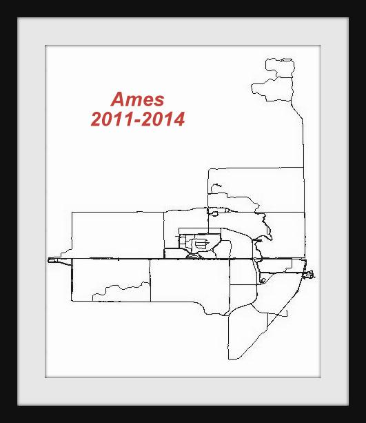

Photos
Back to Jun Chen's homepageLife
I have been there (as of April 2019)
Run @ Ames, IA, 2011-2015

Run @ Idaho Falls, ID, 2015

Coover Hall, Ames, IA (taken on Feburary 17, 2013), where I spent four years for my Ph.D. degree.

First Pet, 2002-2015, (taken on June 2011). She was born and abandoned, while my older brother decided to bring her home. She had 3 (?) babies.

View
Lake Mendota, Madison, WI (taken on August 17, 2013), where 2013 IEEE CASE was held. It is taken by iPhone 4S running on iOS8.0, and this proves that for me iPhone works way better than SLR camera.

Fishing Cone, Yellowstone National Park (taken on August 9, 2015)

Morning Glory Pool, Yellowstone National Park (taken on August 9, 2015)

Upper Mesa Falls, Idaho (taken on August 27, 2015)

Daffodils blossomed in spring 2019 in Michigan (taken on February 10, 2019). Auto processed and stylized by Google Photos.